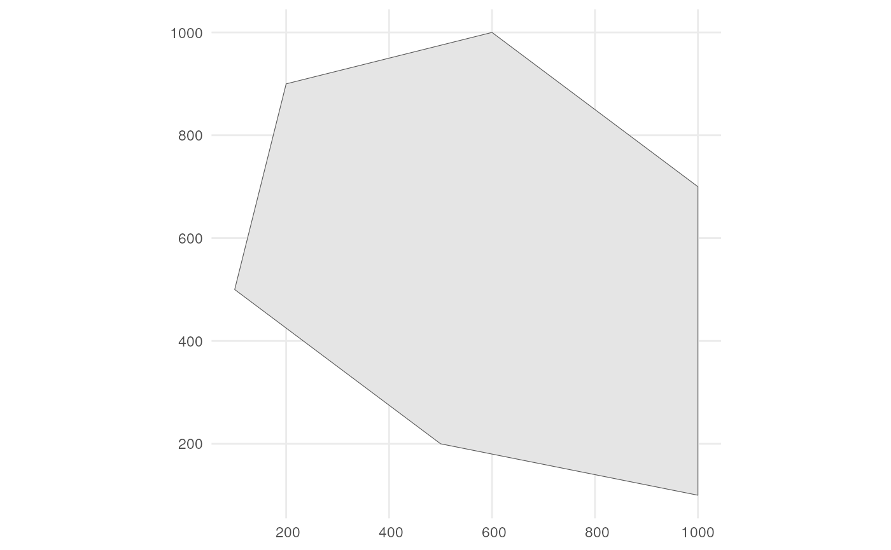
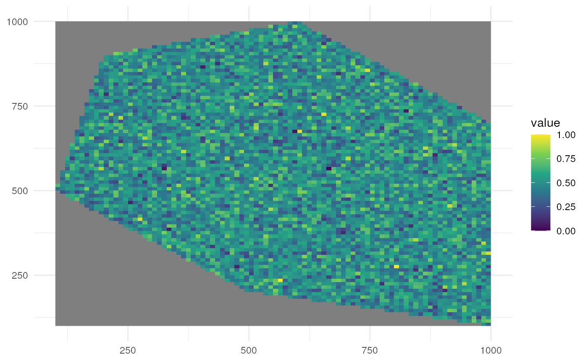
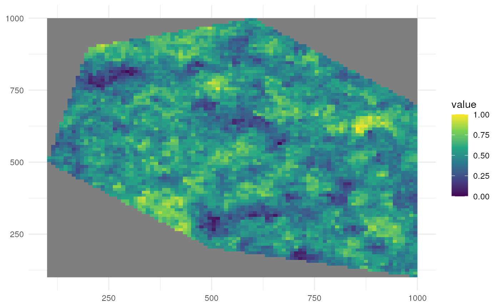
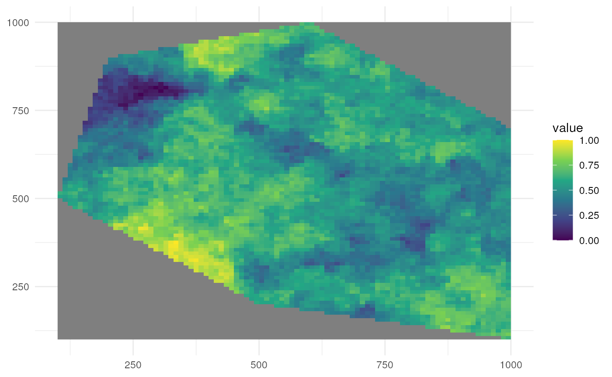
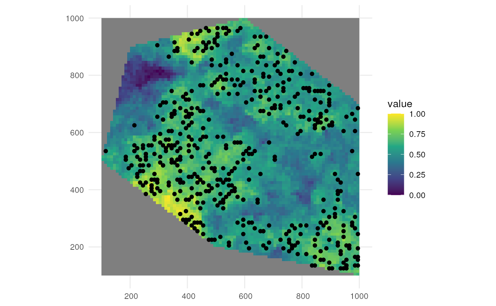
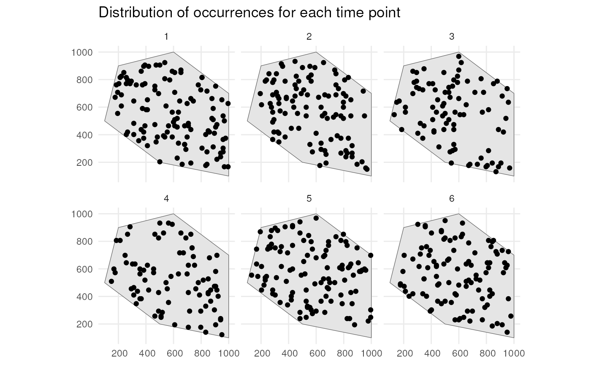

1. Simulating the occurrence process
Source:vignettes/occurrence-process.Rmd
occurrence-process.RmdThe workflow for simulating a biodiversity data cube used in gcube can be divided in three steps or processes:
- Occurrence process
- Detection process
- Grid designation process
This vignette documents the first part of the gcube simulation workflow, viz. the occurrence process.
# Load packages
library(gcube)
library(sf) # work with spatial objects
library(dplyr) # data wrangling
library(ggplot2) # data visualisation
library(tidyterra) # visualisation spatraster objectsInput
The functions are set up such that a single polygon as input is enough to go through this workflow using default arguments. The user can change these arguments to allow for more flexibility. In this vignette we will demonstrate the different options.
As input, we create a polygon in which we want to simulate occurrences.
polygon <- st_polygon(list(cbind(c(500, 1000, 1000, 600, 200, 100, 500),
c(200, 100, 700, 1000, 900, 500, 200))))The polygon looks like this.
ggplot() +
geom_sf(data = polygon) +
theme_minimal()
Simulate occurrences
We generate occurrence points within the polygon using the
simulate_occurrences() function. Default arguments ensure
that an sf object with POLYGON geometry is sufficient to simulate
occurrences.
?simulate_occurrencesThe options for user defined arguments are demonstrated in the next subsections.
Changing number of occurrences over time
Say we want to have 100 occurrences in our plot over 10 years. You
can change the trend in number of occurrences over time. We visualise
this with the helper functions used in
simulate_occurrences(). The number of occurrences are
always drawn from a Poisson distribution.
?simulate_timeseriesOption 1
If we do not specify a temporal function, we draw from a Poisson
distribution for each time point with average (lambda parameter)
initial_average_occurrences.
n_occurrences_indep <- simulate_timeseries(
initial_average_occurrences = 100,
n_time_points = 10,
temporal_function = NA,
seed = 123)We plot the simulated number of occurrences over time. We see that the average is close to 100 over time as expected. Using a different seed will result in different numbers but the average will be (close to) 100 over time.
tibble(
n_occurrences = n_occurrences_indep,
time_point = seq_along(n_occurrences_indep)
) %>%
ggplot(aes(x = time_point, y = n_occurrences)) +
geom_point() +
geom_smooth(method = "lm", formula = "y ~ x", se = FALSE) +
theme_minimal()
Option 2
We can specify a function ourselves, e.g. the internal function
simulate_random_walk() to have a random walk over time. A
random walk is a mathematical concept where each step is determined
randomly. The sd_step parameter refers to the standard
deviation of these random steps (drawn from a Normal distribution). A
higher value leading to larger steps and potentially greater variability
in the path of the random walk.
n_occurrences_walk <- simulate_timeseries(
initial_average_occurrences = 100,
n_time_points = 10,
temporal_function = simulate_random_walk,
sd_step = 1,
seed = 123)We plot the simulated number of occurrences over time which follow a random walk. Using a different seed will result in a different random pattern.
tibble(
n_occurrences = n_occurrences_walk,
time_point = seq_along(n_occurrences_walk)
) %>%
ggplot(aes(x = time_point, y = n_occurrences)) +
geom_point() +
theme_minimal()
Option 3
We can specify a function ourselves that determines the average trend in number of occurrences over time. Here we provide an example for a linear trend.
my_own_linear_function <- function(
initial_average_occurrences = initial_average_occurrences,
n_time_points = n_time_points,
coef) {
# Calculate new average abundances over time
time <- seq_len(n_time_points) - 1
lambdas <- initial_average_occurrences + (coef * time)
# Identify where the lambda values become 0 or lower
zero_or_lower_index <- which(lambdas <= 0)
# If any lambda becomes 0 or lower, set all subsequent lambdas to 0
if (length(zero_or_lower_index) > 0) {
zero_or_lower_indices <- zero_or_lower_index[1]:n_time_points
lambdas[zero_or_lower_indices] <- 0
}
# Return average abundances
return(lambdas)
}We try out a linear trend with slope equal to 1.
n_occurrences_linear <- simulate_timeseries(
initial_average_occurrences = 100,
n_time_points = 10,
temporal_function = my_own_linear_function,
coef = 1,
seed = 123)We plot the simulated number of occurrences over time. We see that the average slope is indeed close to 1. Using a different seed will result in different numbers but the average slope will be (close to) 1.
tibble(
n_occurrences = n_occurrences_linear,
time_point = seq_along(n_occurrences_linear)
) %>%
ggplot(aes(x = time_point, y = n_occurrences)) +
geom_point() +
geom_smooth(method = "lm", formula = "y ~ x", se = FALSE) +
theme_minimal()
Changing the degree of spatial clustering
We can also choose the amount of spatial clustering. We visualise
this with the helper functions used in
simulate_occurrences().
?create_spatial_patternOption 1
There are defaults for random and clustered patterns. Let’s look at the default where we have no clustering.
rs_pattern_random <- create_spatial_pattern(
polygon = polygon,
resolution = 10,
spatial_pattern = "random",
seed = 123)
#> [using unconditional Gaussian simulation]We see values of high sampling probability randomly distributed.
ggplot() +
geom_spatraster(data = rs_pattern_random) +
scale_fill_continuous(type = "viridis") +
theme_minimal()
Option 2
Let’s look at the default where we have clustering (same as
spatial_pattern = 10, see further).
rs_pattern_clustered <- create_spatial_pattern(
polygon = polygon,
resolution = 10,
spatial_pattern = "clustered",
seed = 123)
#> [using unconditional Gaussian simulation]We see values of high sampling probability clustered together.
ggplot() +
geom_spatraster(data = rs_pattern_clustered) +
scale_fill_continuous(type = "viridis") +
theme_minimal()
Option 3
We can also change the clustering ourselves. A larger number for
spatial_pattern means a broader size of the clusters area.
Let’s look at a low value for clustering.
rs_pattern_clustered2 <- create_spatial_pattern(
polygon = polygon,
resolution = 10,
spatial_pattern = 5,
seed = 123)
#> [using unconditional Gaussian simulation]We see values of high sampling probability in multiple, smaller clusters.
ggplot() +
geom_spatraster(data = rs_pattern_clustered2) +
scale_fill_continuous(type = "viridis") +
theme_minimal()
Let’s look at a high value for clustering.
rs_pattern_clustered3 <- create_spatial_pattern(
polygon = polygon,
resolution = 10,
spatial_pattern = 100,
seed = 123)
#> [using unconditional Gaussian simulation]We see values of high sampling probability in fewer, larger clusters.
ggplot() +
geom_spatraster(data = rs_pattern_clustered3) +
scale_fill_continuous(type = "viridis") +
theme_minimal()
The patterns generated above are then used for sampling using a different helper function.
?sample_occurrences_from_rasterIf we for example sample 500 occurrences from the last raster, we see the sampling is according to the expected pattern.
pts_occ_clustered3 <- sample_occurrences_from_raster(
rs = rs_pattern_clustered3,
ts = 500,
seed = 123)
ggplot() +
geom_spatraster(data = rs_pattern_clustered3) +
geom_sf(data = pts_occ_clustered3) +
scale_fill_continuous(type = "viridis") +
theme_minimal()
Example
Now that we know how the helper functions work, we can generate
occurrence points within the polygon using the
simulate_occurrences() function. We can for example sample
randomly within the polygon over 6 time points were we use a random walk
over time with an initial average number of occurrences equal to
100.
occurrences_df <- simulate_occurrences(
plgn = polygon,
initial_average_abundance = 100,
n_time_points = 6,
temporal_function = simulate_random_walk,
sd_step = 1,
spatial_autocorr = "random",
seed = 123)
#> [using unconditional Gaussian simulation]This is the number of occurrences we have for each time point.
occurrences_df %>%
st_drop_geometry() %>%
count(time_point) %>%
ggplot(aes(x = time_point, y = n)) +
geom_point() +
theme_minimal()
This is the spatial distribution of the occurrences for each time point.
ggplot() +
geom_sf(data = polygon) +
geom_sf(data = occurrences_df) +
facet_wrap(~time_point, nrow = 2) +
ggtitle("Distribution of occurrences for each time point") +
theme_minimal()